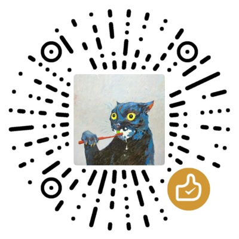

颜色
TagSpace 配置·颜色
c:标签=调色板序号(0-11) 或 #RRGGBB。只记录你手动改过色的标签，其余按标签名取默认色。
书签标签化管理 · 标签与配置都写在你自己的书签里
两台设备在首次同步完成前各建了一套配置文件时会这样。合并会取内容的并集，冲突项保留较早那个文件的值，多余的删掉（删前备份标题）。
这个扩展是我一个人写的。没有团队，没有预算，也没有广告。
起因很小。我自己的书签三千多条，想找一个旧网址，翻了五六分钟没找着，翻到后来自己都笑了。后来就想着，干脆自己写一个。断断续续写到能用，中间放弃过两次。
它不要钱，也不联网。标签完全兼容使用浏览器自带的同步。
写它不算难，难的是养着它，挺费心思的，但是也乐在其中。
如果你觉得它替你省下过一点时间，愿意请我喝一罐可乐，我会记着哥们的人情。不愿意也完全没关系，你接着用，它照样好用。谢谢每一个把它留在扩展栏里的人。

两张码都是图片，存在扩展自己的文件夹里；扫不扫，它都在那儿照常干活。
源码、更新、问题都在这里：github.com/vivikuyo/tagmybookmarks
设置回收站：删除的书签统一移进去，可随时还原。
书签树里没有找到名为「回收站 / 垃圾桶 / Trash」的目录——部分浏览器的回收站是内置虚拟视图，扩展读不到。可用下面的默认位置，或自选一个目录。
已配置的回收站目录（见上）不存在了，可能被删除或改名，请重新设置。
默认「其他书签/TagSpace/回收站」，不进索引、不影响标签统计；更换位置后，旧回收站里的书签不会自动搬过去。
TagSpace 配置·颜色
c:标签=调色板序号(0-11) 或 #RRGGBB。只记录你手动改过色的标签，其余按标签名取默认色。
TagSpace 配置·偏好
只放“跨设备应当一致”的偏好。面板宽度、上次查询这类设备相关的存在本地。
TagSpace 配置·别名
a:别名=规范标签。输入别名同样命中规范标签下的书签。
它们是 其他书签 / TagSpace 文件夹下的三个普通书签，标题里的
[**...] 就是配置本体。你可以在原生管理器里直接改，也可以在这里改；
删掉任意一个只会丢那一类配置，扩展会自动重建并尽量从本地快照恢复。
它们的 URL 里有 #cfg= 标记，所以改标题不会破坏识别，改 URL 会。